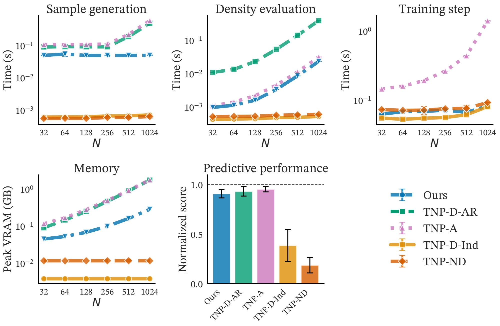
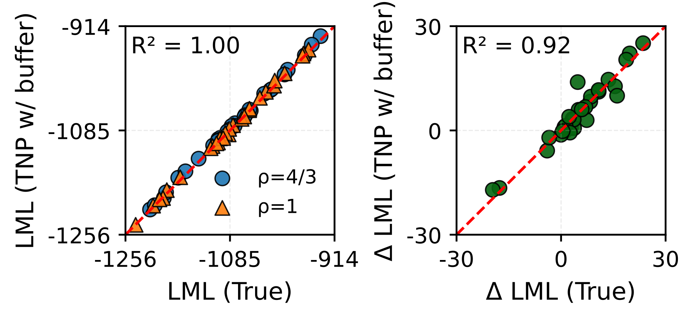

1ELLIS Institute Finland 2University of Helsinki 3DataCrunch 4University of Manchester 5Aalto University
*Equal contribution
Transformer-based models for amortized probabilistic inference, such as neural processes, prior-fitted networks, and tabular foundation models, excel at single-pass marginal prediction. However, many real-world applications require coherent joint distributions that capture dependencies between predictions. While purely autoregressive architectures efficiently generate such distributions, they sacrifice the flexible set-conditioning that makes these models powerful for meta-learning. Conversely, the standard approach to obtain joint distributions from set-based models requires expensive re-encoding of an updated context set at each autoregressive step.
We introduce a causal autoregressive buffer that preserves the advantages of both paradigms. Our approach decouples context encoding from updating the conditioning set. The model processes the context once and caches it, while a dynamic buffer captures target dependencies: as targets are incorporated, they enter the buffer and attend to both the cached context and previously buffered targets. This enables efficient batched autoregressive generation and one-pass joint predictive density evaluation. Training seamlessly integrates set-based and autoregressive modes at minimal additional cost. Across synthetic functions, EEG signals, cognitive models, and tabular data, our method matches the predictive accuracy of strong baselines while delivering up to 20× faster joint sampling.
Our key insight is to separate the roles of the initial context and predicted targets. We preserve permutation invariance for the initial context (encoded once and cached) while handling target dependencies through a separate causal mechanism.
Re-encodes the entire augmented context set at each step. Each new prediction triggers complete re-computation of the context representation.
Encodes context once and caches it. New predictions enter a causal buffer that attends to both the cached context and previous buffer entries.

We validate our method across diverse tasks: regression on synthetic functions, interpolation of real-world EEG data, Bayesian model selection on a multisensory perception model, and pre-training of a tabular foundation model.
| Task | TNP-D (AR) | TNP-D (Ind) | TNP-A | Ours (K=16) |
|---|---|---|---|---|
| GP | 2.57 | 2.22 | 2.24 | 2.51 |
| Sawtooth | 1.05 | 0.94 | 0.98 | 1.00 |
| EEG-Int | 0.51 | 0.36 | 0.58 | 0.52 |
| EEG-For | 1.07 | -0.74 | 1.23 | 0.85 |
Average predictive density (↑) results on synthetic functions and EEG tasks. Our method (\(K=16\)) achieves comparable performance to the expensive TNP-D (AR) baseline while being up to 20× faster.

If you find this work useful, please cite our paper:
@inproceedings{hassan2026efficient,
title={Efficient Autoregressive Inference for Transformer Probabilistic Models},
author={Conor Hassan and Nasrulloh Loka and Cen-You Li and Daolang Huang and Paul E. Chang and Yang Yang and Francesco Silvestrin and Samuel Kaski and Luigi Acerbi},
booktitle={The Fourteenth International Conference on Learning Representations},
year={2026},
url={https://arxiv.org/abs/2510.09477},
}